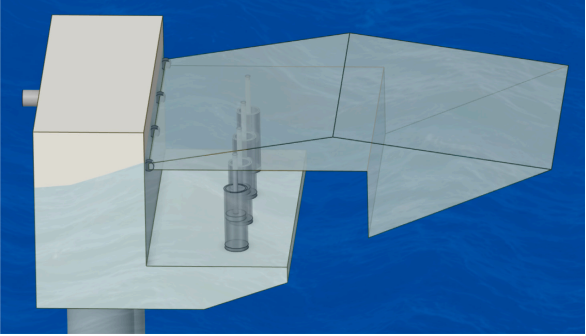
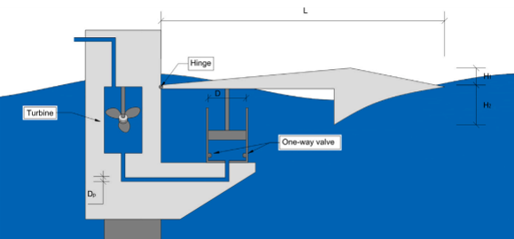
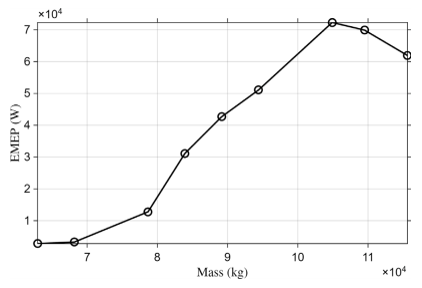
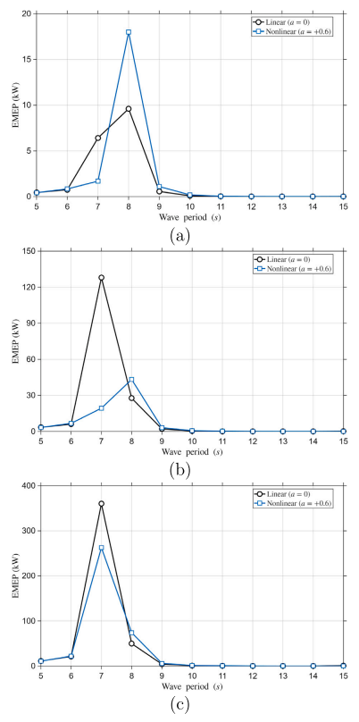

How Can Nearshore Wave Motion Be Turned into Useful Power?
Why the motion that matters is the motion where energy is extracted
Ocean waves contain energy.
That statement is simple.
Turning that energy into useful power is not.
A floating body placed in waves will move, but motion alone does not generate electricity. The motion must occur in a form and at a location where a power take-off system (PTO) can extract mechanical energy and convert it into something useful.
This leads to a more precise engineering question:
Which part of the wave-induced motion should we actually try to maximize?
Our recent study of a nearshore oscillating-arm wave energy converter suggests an important answer:
Do not simply maximize the motion of the floating body. Create useful motion where the PTO extracts energy.
That distinction provides a useful way to understand how wave motion can eventually become electrical power.
Start with the energy path
The proposed system is conceptually simple.
A floating arm is connected to a fixed nearshore structure through a hinge. Waves cause the arm to oscillate. Hydraulic cylinders installed between the moving arm and the fixed support convert that relative motion into fluid flow.

The complete energy path can be written schematically as
\[ \boxed{ \text{wave} \rightarrow \text{arm motion} \rightarrow \text{local PTO motion} \rightarrow \text{piston motion} \rightarrow \text{hydraulic flow} \rightarrow \text{power}. } \]
Every arrow matters.
A design that produces large global motion but poor piston motion may be a poor energy converter.
Conversely, a geometry producing favorable motion at the PTO location can be useful even if some global response measure is not maximized.
This is why the local response becomes important.
The PTO does not see the global motion
Consider the floating arm as a rigid body undergoing translation and rotation.
A point located at the PTO connection does not necessarily move by the same amount as the body’s center of gravity.
Its displacement depends on
- translation,
- rotation,
- geometry,
- and its distance from the hinge.
For a small rotation \(\theta\), the local vertical motion can be thought of schematically as
\[ h_{\mathrm{PTO}} \approx h_0 + r\theta, \]
where \(h_0\) represents translational contribution and \(r\) is an appropriate geometric lever arm.
This is a conceptual expression rather than the actual numerical formulation used in the study.
Its physical meaning is what matters:
Where the PTO is attached determines the motion available for energy extraction.
That is why looking only at global heave or pitch can miss the quantity that directly drives the energy-conversion system.
From local motion to piston motion
In the reduced-order model, the piston displacement is approximated from the local heave displacement at the PTO location:
\[ d_i(t)\approx h_i(t), \]
and therefore
\[ \dot d_i(t)\approx \dot h_i(t). \]
The piston velocity then produces hydraulic flow.
For a cylinder with piston area \(A_c\),
\[ Q_i(t) = A_c\dot d_i(t) \approx A_c\dot h_i(t). \]
This equation contains an important engineering message.
Power generation is not driven directly by displacement.
It is strongly connected to velocity.
A large displacement that occurs slowly may produce less hydraulic throughput than a somewhat smaller displacement occurring rapidly.
So already we can see why
\[ \boxed{ \text{maximum displacement} \neq \text{maximum useful power}. } \]
How reciprocating motion becomes useful flow
The floating arm moves back and forth.
A turbine, however, benefits from a consistently directed hydraulic flow.
The hydraulic circuit therefore uses check valves to rectify the reciprocating cylinder flow.

For the \(i\)th PTO, the rectified flow is represented in the reduced-order framework as
\[ Q_i^*(t) = A_c \left| \dot h_i(t) \right|. \]
With several PTO units, the contributions are combined:
\[ Q_T(t) = \sum_{i=1}^{N_{\mathrm{PTO}}} Q_i^*(t). \]
Thus multiple cylinders feed a common hydraulic stream.
The mechanical oscillation has now been transformed into a usable unidirectional flow.
From hydraulic flow to estimated power
The total flow produces an effective turbine inflow velocity,
\[ U_T(t) = \frac{Q_T(t)}{A_T}, \]
where \(A_T\) is the effective turbine flow area.
The reduced-order electrical-power estimate used in the study is
\[ P_{\mathrm{el}}(t) \approx \eta_{\mathrm{PTO}} \frac{1}{2} \rho_w A_T U_T^3(t), \]
or equivalently,
\[ P_{\mathrm{el}}(t) \approx \eta_{\mathrm{PTO}} \frac{\rho_w}{2A_T^2} Q_T^3(t). \]
The study then evaluates the estimated mean electrical power, EMEP, over the quasi-steady portion of the response.
This formulation should not be interpreted as a detailed turbine-generator model.
Its purpose is to provide a consistent reduced-order metric for comparing design alternatives.
But it makes the energy path very clear:
\[ \boxed{ \dot h_{\mathrm{PTO}} \rightarrow Q \rightarrow P. } \]
The local velocity where the PTO is installed is therefore much closer to the energy-conversion mechanism than a general measure of floating-body motion.
First shape the motion
Before refining the hydraulic system, the floating arm itself was refined.
Its upper and lower geometry was varied systematically.
The purpose was not merely to create the largest possible floating body.
It was to find a geometry that transferred wave-induced motion effectively toward the PTO location.
This distinction matters.
The wave acts over the wetted surface.
The PTO acts at a particular point.
Geometry determines how one becomes the other.
Schematically,
\[ \text{wave pressure distribution} \rightarrow \text{force and moment} \rightarrow \text{arm motion} \rightarrow \text{local PTO motion}. \]
Changing the arm profile therefore changes the entire mechanical transmission between the incident wave and the energy-extraction point.
More curvature gave more motion—but not necessarily more power
One particularly interesting result appeared when the inclined wave-contact surface was changed from a straight profile to a curved one.
A quadratic profile was introduced as
\[ y=ax^2+bx+c, \]
where \(a\) controls curvature.
Under the representative condition used for geometric screening, the case with
\[ a=+0.6 \]
produced the largest local maximum heave and the largest response range.
Its maximum heave was about
\[ 1.824~\mathrm{m}, \]
compared with
\[ 1.646~\mathrm{m} \]
for the linear profile.
That is an increase of about 10.8%.
If the objective were simply
maximize motion,
the nonlinear surface might appear to be the winner.
But that was not the final result.
When the configurations were subsequently evaluated in terms of estimated power over a broader range of wave periods, the linear geometry produced smoother and more robust performance.
This is one of the most useful results in the paper:
The geometry that maximizes a local response at one wave condition does not necessarily maximize useful energy performance over the operating range.
Why can maximum motion fail to give maximum power?
Because the WEC is not simply a floating object.
It is a coupled hydrodynamic–mechanical–hydraulic system.
Changing geometry affects
- wave excitation,
- added mass,
- radiation damping,
- arm inertia,
- local displacement,
- local velocity,
- and interaction with the PTO impedance.
The PTO itself adds equivalent stiffness and damping.
The governing hydrodynamic system can be written in frequency-domain form as
\[ \left[ -\omega^2(\mathbf M+\mathbf A) +i\omega(\mathbf B+\mathbf C_{\mathrm{PTO}}) + (\mathbf K_h+\mathbf K_{\mathrm{PTO}}) \right] \boldsymbol{\xi} = \mathbf F_{\mathrm{exc}}. \]
Thus the PTO is not simply attached after the hydrodynamic response has been determined.
It becomes part of the dynamics.
Extracting energy changes the motion from which the energy is being extracted.
More PTOs give more flow—but with diminishing returns
Another apparently simple question is:
Why not install as many PTO cylinders as possible?
The study examined one to five PTO units.
As expected, total hydraulic flow increased as more PTOs were added.
But the increase was not proportional to the number of units.
The hydraulic-flow contribution per PTO decreased as the number increased.
The four-PTO configuration retained approximately
\[ 74\%-84\% \]
of the hydraulic flow achieved by five PTOs across the investigated cases, while eliminating one PTO unit.
This is a familiar engineering optimization problem:
\[ \text{additional component} \rightarrow \text{additional benefit}, \]
but
\[ \frac{\text{incremental benefit}} {\text{additional component}} \downarrow. \]
More equipment does not automatically mean proportionally more useful energy.
The four-PTO configuration was therefore selected as a favorable balance between hydraulic throughput and system simplicity within the reduced-order assessment.
The hydraulic system must also be dynamically matched
Cylinder diameter, hydraulic-line diameter, and PTO position were then varied.
Changing these parameters does more than alter flow capacity.
It also changes the equivalent hydraulic stiffness and damping seen by the floating arm.
For example, the cylinder area is
\[ A_c = \frac{\pi D_c^2}{4}. \]
A larger cylinder can generate more flow for a given piston velocity.
But cylinder size also affects the equivalent PTO impedance.
Similarly, changing hydraulic-line diameter alters hydraulic resistance.
So neither
\[ \text{maximum flow capacity} \]
nor
\[ \text{minimum resistance} \]
alone defines the best system.
The useful condition arises from a balance between the hydrodynamic response and the hydraulic PTO.
Again, the design problem is one of dynamic matching.
Heavier is not always better
The floating-body mass was also varied while keeping geometry and the selected PTO configuration unchanged.
One might expect a simple trend:
\[ \text{more mass} \rightarrow \text{less motion} \rightarrow \text{less power}. \]
But coupled dynamic systems rarely behave so simply.
Changing mass changes the inertia of the oscillating arm and therefore shifts its relationship with wave excitation and PTO impedance.
The result was a non-monotonic energy response.

This is an important structural-dynamics result.
Mass is not merely something that resists acceleration.
It is part of the system that determines where the dynamic response occurs in frequency.
Thus an intermediate mass can outperform both lighter and heavier alternatives.
Wave period matters more than simply having a larger wave
After refining the system, performance was examined over
\[ T=5\text{--}15~\mathrm{s} \]
and incident-wave heights of
\[ H=1,\ 2,\ 3~\mathrm{m}. \]
A clear pattern emerged.
Changing wave height changed the magnitude of the response substantially.
But the favorable period range remained concentrated around a similar region.
In other words,
\[ H \rightarrow \text{response intensity}, \]
while
\[ T \rightarrow \text{dynamic matching}. \]
That distinction is fundamental.
A taller wave contains more energy.
But the WEC can only exploit that energy efficiently if its dynamics allow the wave to generate useful motion at the PTO.
The WEC has an operating window
The refined system showed its strongest energy-conversion behavior over a limited wave-period range, particularly around approximately
\[ T=7\text{--}8~\mathrm{s} \]
for the investigated configurations.

This is closely related to resonance and frequency-response concepts familiar from structural dynamics.
A simplified oscillator,
\[ m\ddot x+c\dot x+kx=F(t), \]
does not respond only according to the magnitude of \(F\).
Its response depends strongly on excitation frequency relative to its own dynamic characteristics.
The WEC behaves similarly, although its real dynamics include hydrodynamic added mass, radiation damping, hydrostatic restoring effects, hinge motion, and PTO impedance.
So the correct question is not:
How energetic are the waves?
It is:
How well do the waves dynamically match the energy-conversion system?
Why nearshore deployment is interesting
The proposed device is intended conceptually for modular installation along nearshore or coastal structures.
That creates an attractive possibility.
Instead of one very large offshore WEC, repeated modules could potentially be arranged along infrastructure such as coastal protection structures.
This could offer advantages in
- access,
- installation,
- maintenance,
- modularity,
- and proximity to electricity demand.
It may also eventually permit wave-energy harvesting and coastal protection to be considered together.
But this paper does not demonstrate those array-level or coastal-integration benefits.
The analysis concerns a single module.
Hydrodynamic interaction among multiple units, spacing optimization, coastal interference, and wave-attenuation performance remain outside the scope of the study.
That distinction is important.
The power numbers require caution
Under the adopted reduced-order formulation and regular-wave conditions, the refined configurations produced estimated mean electrical powers ranging from several kilowatts to several hundred kilowatts depending on the wave condition.
Those values should not be interpreted as predictions of commercially deliverable electrical power.
The model deliberately simplifies the energy-conversion chain.
It does not explicitly resolve all effects associated with
- transient hydraulic circuitry,
- valve losses,
- leakage,
- accumulator dynamics,
- turbine performance curves,
- generator dynamics,
- control systems,
- and detailed electromechanical losses.
The EMEP is therefore best understood as a comparative preliminary-design metric.
It allows one design to be compared consistently with another.
It does not yet certify a generator output.
What happens under irregular waves?
Real seas do not consist of one perfectly regular sinusoidal wave.
The study therefore included an additional JONSWAP irregular-wave assessment using
\[ H_s=3~\mathrm{m}, \qquad T_p=7~\mathrm{s}, \]
with different spectral peak-enhancement factors.
The purpose was not to establish full stochastic performance.
It was to see whether the principal design trends identified under regular waves remained meaningful when wave energy was distributed over a spectrum.
The results provided supplementary evidence that the main trends remained generally consistent for the investigated irregular-wave cases.
But much more is required before commercial performance can be assessed.
The deeper mechanics: useful motion is local
Perhaps the most general idea from this study has little to do with wave energy specifically.
Engineers often characterize a system using global quantities:
- center-of-mass displacement,
- global rotation,
- maximum structural displacement,
- overall response amplitude.
Those quantities are useful.
But a device performs its function locally.
A damper works where it is connected.
A bearing transfers load where it contacts the structure.
A turbine extracts energy where flow passes through it.
And a hydraulic PTO extracts energy from the relative motion of its piston.
For this WEC,
\[ \boxed{ \text{global motion} \neq \text{local useful motion}. } \]
The local PTO response is therefore not merely another output variable.
It is the mechanical bridge between hydrodynamics and energy conversion.
From waves to electricity
We can now return to the original question.
How can nearshore wave motion become useful power?
Not simply by putting a floating object in energetic waves.
The conversion requires a sequence:
\[ \boxed{ \begin{aligned} \text{wave excitation} &\rightarrow \text{hydrodynamic response}\\ &\rightarrow \text{local PTO motion}\\ &\rightarrow \text{piston velocity}\\ &\rightarrow \text{rectified hydraulic flow}\\ &\rightarrow \text{turbine inflow}\\ &\rightarrow \text{electrical power}. \end{aligned} } \]
Every stage can constrain the next one.
That is why geometry, inertia, PTO number, PTO position, hydraulic parameters, and wave period cannot be designed independently.
They belong to one energy-conversion system.
Limitations
The present study is a reduced-order preliminary-design framework.
The hydrodynamic analysis is based primarily on linear potential-flow assumptions and does not explicitly represent all nonlinear phenomena that may become important in energetic nearshore conditions, including strong viscous effects, slamming, overtopping, and large-amplitude motion.
The hydraulic PTO is represented through equivalent stiffness and damping rather than a complete transient hydraulic circuit.
The electrical-power calculation is likewise an estimated comparative metric rather than a turbine- and generator-specific prediction.
The study evaluates a single WEC module. Multi-module interaction, device spacing, coastal integration, structural survivability, fatigue, hinge durability, corrosion, marine fouling, maintenance, techno-economic performance, and experimental validation remain important future steps.
Therefore, the reported favorable configurations should be interpreted within the investigated parameter ranges and modeling assumptions.
Engineering takeaway
Wave-energy harvesting is not a competition to produce the largest possible floating-body motion.
What matters is whether wave excitation creates the right motion at the right place, and whether the PTO can convert that motion efficiently.
A geometry that moves more is not necessarily better.
More PTO units are not necessarily proportionally better.
A larger wave is not automatically better if its period is poorly matched to the system.
And changing mass can either improve or degrade performance depending on the resulting dynamics.
The broader engineering principle is:
Do not simply maximize wave-induced motion. Create the right motion where energy is extracted.
Original research
Saghi, H., Jo, Y., Seyyedabadi, Y., & Zi, G. (2026). Local PTO response-based framework for a nearshore oscillating-arm wave energy converter. Energy, 360, 141910. https://doi.org/10.1016/j.energy.2026.141910